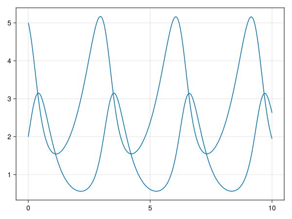
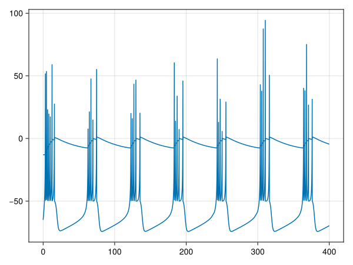
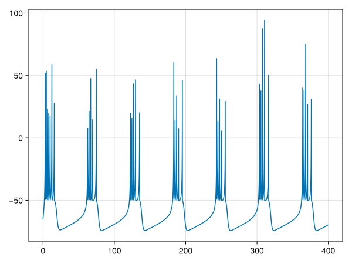
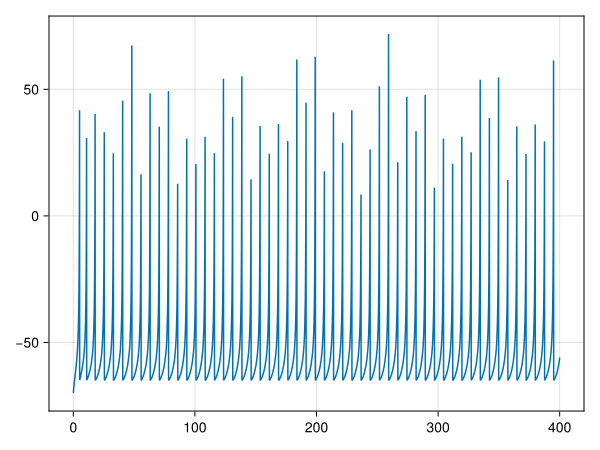
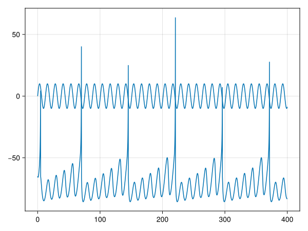

Differential Equations with ModelingToolkit
Jupyter Notebook: Please work on
intro_diffeq.ipynb.
<iframe width="560" height="315" src="https://www.youtube.com/embed/6EaolLVhnug?si=eC7OGnwzSrOWvmyr" title="YouTube video player" frameborder="0" allow="accelerometer; autoplay; clipboard-write; encrypted-media; gyroscope; picture-in-picture; web-share" referrerpolicy="strict-origin-when-cross-origin" allowfullscreen></iframe>Introduction
In this session we will learn how to define and solve differential equation systems using a symbolic representation with ModelingToolkit. First we will work with a popular two-dimensional model called the Lotka-Volterra system.
The Lotka-Volterra equations, while originally developed to model predator-prey dynamics in ecology, serve as an excellent starting point for computational neuroscience. They introduce fundamental concepts of dynamical systems that are crucial in neuroscience. These equations demonstrate how two variables can interact and influence each other over time - similar to how neurons or neural populations interact. Understanding this behavior helps build intuition for more complex systems where neurons form feedback and feedforward connections with one another.
We will then proceed to model our first neuron using the Izhikevich model [1]. Even though the model appears simple, it can exhibit many different spiking patterns (e.g. regular and fast spiking, bursting, chattering) by changing its parameters. Such parameter changes simulate both intrinsic (e.g. neuromodulation, neurotransmitter availability) and extrinsic (e.g. pharmacological interventions) factors. Neurons that change their spiking behavior can affect the stability of entire neuronal networks of which they are part.
Learning goals:
- Learn about ModelingToolkit, the symbolic way to define differential equation systems.
- Implement a neuron model using ModelingToolkit and simulate spiking
Lotka-Volterra System
# Import the packages we need
using ModelingToolkit ## for symbolic system definition
using ModelingToolkit: t_nounits as t, D_nounits as D ## generic symbolic time variable and derivative operator
using OrdinaryDiffEqDefault, OrdinaryDiffEqTsit5 ## for ODE solvers
using CairoMakie ## for plotting
# Time-dependent variables.
# The assigned values are default values that will be used as initial conditions if initial conditions are not explicitly provided.
@variables x(t)=1 y(t)=1
# Parameters with assigned values
@parameters a=1.5 b=1.0 c=3.0 d=1.0
# Model equations
eqs = [D(x) ~ a * x - b * x * y,
D(y) ~ -c * y + d * x * y]
# Model system, defined by the equations, the independent time variable, the time-dependent variables and the parameters
@named sys = ODESystem(eqs, t, [x, y], [a, b, c, d])
# Simplified system equations. Necessary step before solving!
simpsys = structural_simplify(sys)
# Simulation timespan
tspan = (0.0, 10.0)
# Initial conditions. A vector of pairs of the form `[state => initial_condition, ...]`
u0 = [x => 5, y => 2]
# Problem to be solved
prob = ODEProblem(simpsys, u0, tspan)
# Solution of the problem using the Tsit5 solver
sol = solve(prob, Tsit5());The solution object contains the values of every variable of the system (x and y) for every simulated timestep. One can easily access the values of a specific variable using its symbolic name
sol[x] ## or similarly sol[y]31-element Vector{Float64}:
5.0
4.737486951537538
4.159128176496565
3.3782322868012162
2.5672395472069955
1.977383495375779
1.6094065793137624
1.5527495138127205
1.7519768926099863
2.354631225053724
⋮
1.814291633172069
1.5487493568378696
1.7613244814291886
2.5576191015109053
4.0229552328109435
5.154552266613606
3.767979346268823
2.2279544708130485
1.946115942732134Finally we can plot the timeseries of both variables of the solution in a line plot using
fig = plot(sol)
# display the figure
fig
We will shortly see more plot types and options.
Izhikevich Neuron
Simulating Spikes
The Izhikevich neuron is a similar system of ODEs like the Lotka-Volterra example above. One notable difference however is the spiking mechanism. Spiking in the Izhikevich neuron needs to be implemented "manually". That is we need to detect when the voltage variable crosses a spiking threshold and every time this event happens we need to reset the neuron's voltage to a more polarized value and potentially alter other variables too.
@variables v(t)=-65 u(t)=-13
# The following parameter values correspond to chattering spiking.
@parameters a=0.02 b=0.2 c=-50 d=2 I=10
eqs = [D(v) ~ 0.04 * v ^ 2 + 5 * v + 140 - u + I,
D(u) ~ a * (b * v - u)]\[ \begin{align} \frac{\mathrm{d} v\left( t \right)}{\mathrm{d}t} &= 140 + I - u\left( t \right) + 5 v\left( t \right) + 0.04 \left( v\left( t \right) \right)^{2} \\ \frac{\mathrm{d} u\left( t \right)}{\mathrm{d}t} &= a \left( - u\left( t \right) + b v\left( t \right) \right) \end{align} \]
Now we need to define the callback to simulate spikes. Spiking callbacks belong to the family of discrete callbacks and are defined by two parts :
- a condition which triggers the callback every timestep it evaluates as
true, e.g.v > 30means that each time the neuron voltagevrises above30mV a spike is triggered. - a list of equations that assign values to variables and/or parameters, e.g.
v ~ -50means that when a spike is triggered the voltage is resetted to-50mV.
The spiking event for this model looks like this
event = (v > 30.0) => [u ~ u + d, v ~ c]v(t) > 30.0 => Equation[u(t) ~ d + u(t), v(t) ~ c]Now we can move on to define the system including the spiking event, create a problem and solve it.
# Model system and simplification.
@named izh_system = ODESystem(eqs, t, [v, u], [a, b, c, d, I]; discrete_events = event)
izh_simple = structural_simplify(izh_system)
# Initial conditions.
u0 = [v => -65.0, u => -13.0]
# Simulation timespan
tspan = (0.0, 400.0)
izh_prob = ODEProblem(izh_simple, u0, tspan)
izh_sol = solve(izh_prob)
fig = plot(izh_sol)
fig
or if we want to plot just the voltage timeseries with its spiking pattern
fig = plot(izh_sol; idxs=[v])
fig
Changing Parameter Values and Initial Conditions
After defining and simulating a system we might want to run another simulation by changing either or both of the parameter values and the initial conditions. The Izhikevich neuron that we simulated above has multiple spiking regimes that correspond to different parameter value combinations. If we have our ODEProblem already defined as the izh_prob variable above, we can remake it by keeping everything the same except for the fields that we choose to alter. Here we will change only the model parameters to change from chattering to fast spiking.
izh_prob = remake(izh_prob; p = [a => 0.1, b => 0.2, c => -65, d => 2])
# or we can change the initial conditions along with the parameters as
izh_prob = remake(izh_prob; p = [a => 0.1, b => 0.2, c => -65, d => 2], u0 = [v => -70, u => -10])
izh_sol = solve(izh_prob)
fig = plot(izh_sol; idxs=[v])
fig
Notice how the spiking pattern has changed compared to the previous simulation.
Adding External Currents
Until now we have been simulating the Izhikevich neuron by injecting it with a constant external DC current I=10. We'll now see how we can expand the I input to a dynamic current, which is more realistic (currents do not remain constant in the brain for too long). Since I will change dynamically in time, it will be a time-dependent variable of the system and not a constant parameter.
@variables v(t)=-65 u(t)=-13 I(t)
@parameters a=0.02 b=0.2 c=-65 d=8 ## These parameter values correspond to regular spiking.
eqs = [D(v) ~ 0.04 * v ^ 2 + 5 * v + 140 - u + I,
D(u) ~ a * (b * v - u),
I ~ 10*sin(0.5*t)]
event = (v > 30.0) => [u ~ u + d, v ~ c]
@named izh_system = ODESystem(eqs, t, [v, u, I], [a, b, c, d]; discrete_events = event)
izh_simple = structural_simplify(izh_system)\[ \begin{align} \frac{\mathrm{d} v\left( t \right)}{\mathrm{d}t} &= 140 - u\left( t \right) + 5 v\left( t \right) + I\left( t \right) + 0.04 \left( v\left( t \right) \right)^{2} \\ \frac{\mathrm{d} u\left( t \right)}{\mathrm{d}t} &= a \left( - u\left( t \right) + b v\left( t \right) \right) \end{align} \]
Notice how I was moved from the parameter list to the variable list above. Let's display the equations of the original and the simplified system to see the effect of structural_simplify.
equations(izh_system)\[ \begin{align} \frac{\mathrm{d} v\left( t \right)}{\mathrm{d}t} &= 140 - u\left( t \right) + 5 v\left( t \right) + I\left( t \right) + 0.04 \left( v\left( t \right) \right)^{2} \\ \frac{\mathrm{d} u\left( t \right)}{\mathrm{d}t} &= a \left( - u\left( t \right) + b v\left( t \right) \right) \\ I\left( t \right) &= 10 \sin\left( 0.5 t \right) \end{align} \]
The original system contains the algebraic equation for the external current I.
equations(izh_simple)\[ \begin{align} \frac{\mathrm{d} v\left( t \right)}{\mathrm{d}t} &= 140 - u\left( t \right) + 5 v\left( t \right) + I\left( t \right) + 0.04 \left( v\left( t \right) \right)^{2} \\ \frac{\mathrm{d} u\left( t \right)}{\mathrm{d}t} &= a \left( - u\left( t \right) + b v\left( t \right) \right) \end{align} \]
However the I equation has been simplified away in izh_simple, since it was substituted into the differential equation D(v). This is an important functionality of structural_simplify as it has turned a system of Differential Algebraic Equations (DAE) to one of Ordinary Differential Equations (ODE). ODEs can be integrated (solved) much more efficiently compared to DAEs.
tspan = (0.0, 400.0)
# We do not provide initial conditions, so the default values for `v` and `u` from above will be used.
izh_prob = ODEProblem(izh_simple, [], tspan)
izh_sol = solve(izh_prob)
fig = plot(izh_sol; idxs=[v, I])
fig
Notice how the external current is slowly being accumulated in the neuron's potential v until the eventual spike and reset.
Challenge Problems
- Define a Generalized Integrate-and-Fire neuron as an
ODESystemand simulate it. - Pick a neuron model of your choice and perform a sensitivity analysis on the system. How is its spiking behavior change as its parameters change? Summarize the results in one (or several) plots.
References
- [1] E. M. Izhikevich, "Simple model of spiking neurons," in IEEE Transactions on Neural Networks, vol. 14, no. 6, pp. 1569-1572, Nov. 2003, doi: 10.1109/TNN.2003.820440
- [2] Ma, Yingbo, Shashi Gowda, Ranjan Anantharaman, Chris Laughman, Viral Shah, and Chris Rackauckas. "Modelingtoolkit: A composable graph transformation system for equation-based modeling." arXiv preprint arXiv:2103.05244 (2021).
- [3] https://docs.sciml.ai/ModelingToolkit/stable/
This page was generated using Literate.jl.